TTCB · Tornooiapp
Korte, visuele gids voor een eenvoudig enkeltoernooi: instellingen, spelers, groepen, scores, overzicht, spelerdetails en een afvallingsbracket met gekende formule. Screenshots zijn gemaakt met de Nederlandse (NL) taalinstelling.
Open de app en kies rechtsboven NL. De knoppen en labels verschijnen dan in het Nederlands (bijv. Instellingen, Spelers, Groepen, Overzicht).
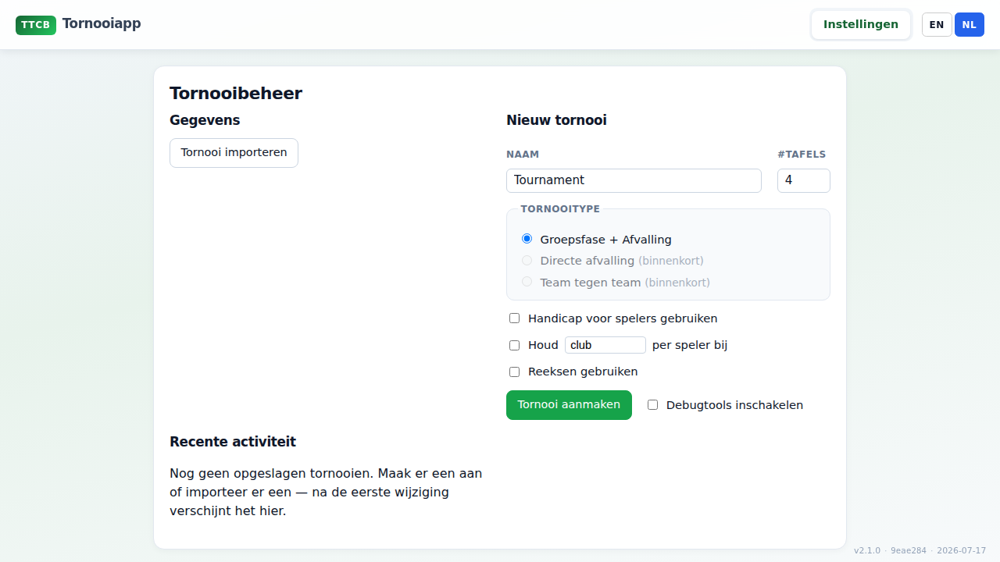
Ga naar Instellingen en vul het wizardformulier in:
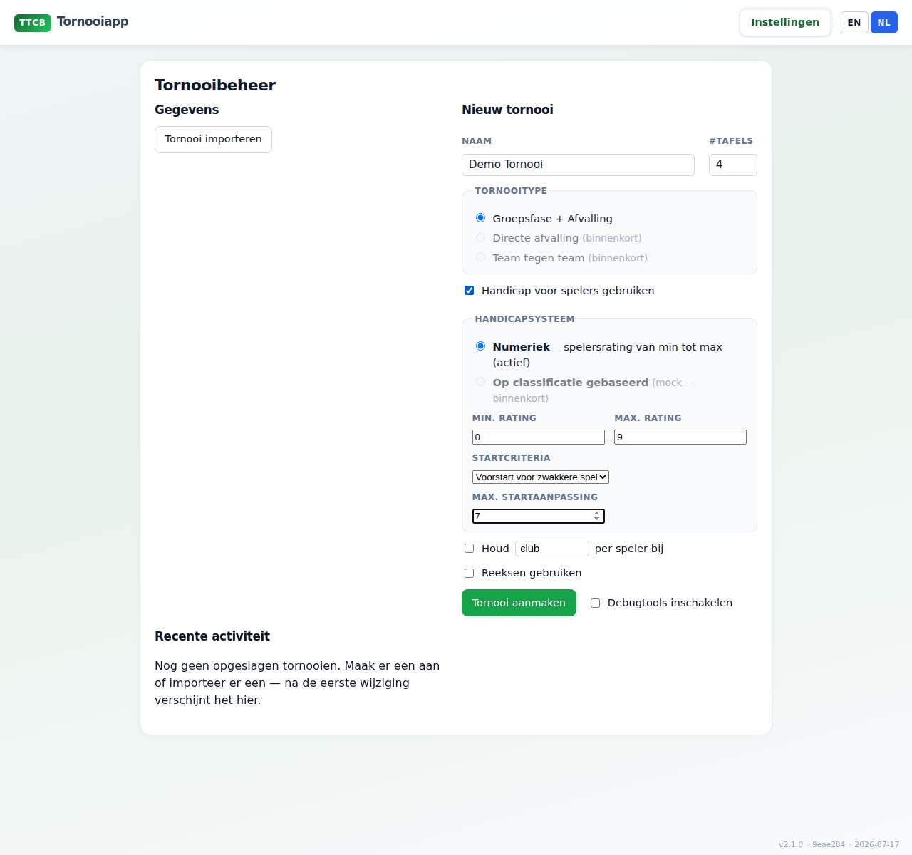
Open het tabblad Spelers. Vul naam en handicap in en klik op toevoegen. Herhaal tot iedereen erin staat (in dit voorbeeld 16 spelers).
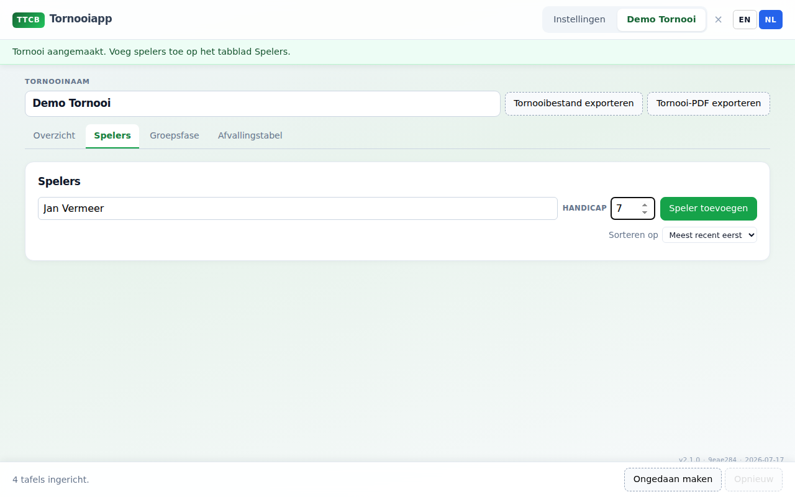
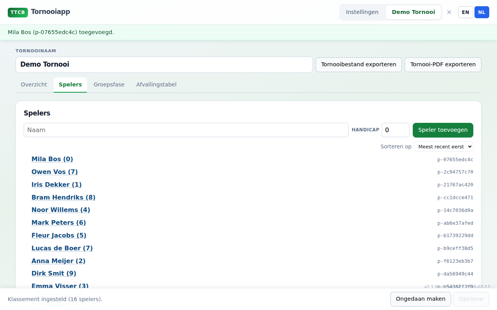
Ga naar Groepen. Kies hoeveel spelers per groep je wilt (hier 4) en maak de groepen. Bij 16 spelers krijg je vier poules van vier — geschikt voor een afvallingsbracket met gekende formule.
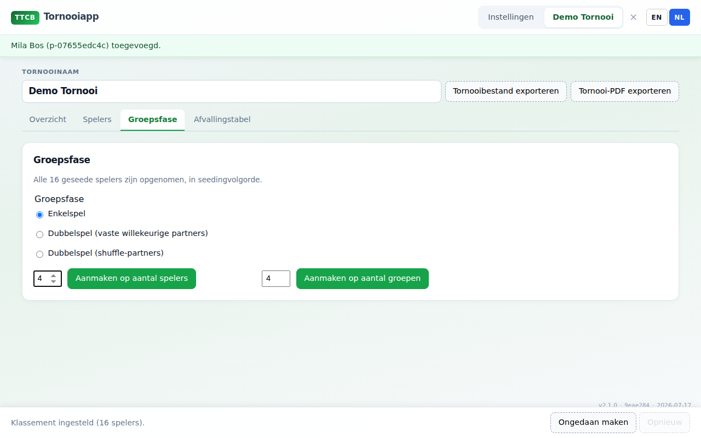
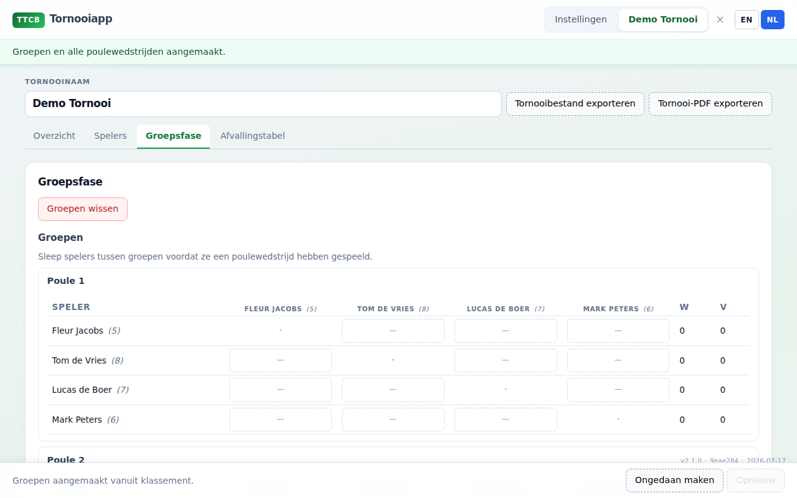
Klik in de matrix op een openstaande wedstrijd. Vul de games in (meestal best-of-5 tot 11) en sla op. Ongeldige scores (bijv. 11–10 zonder deuce-regels) worden geweigerd.
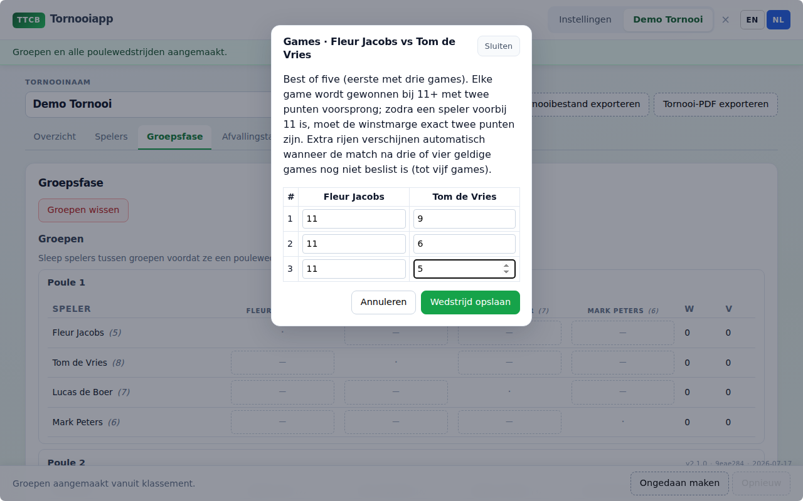
Op Overzicht zie je de klaarlijst en de tafels. Sleep een wedstrijd uit de klaarlijst naar een vrije tafel om hem toe te wijzen. Zo houd je het speelveld tijdens de dag overzichtelijk.
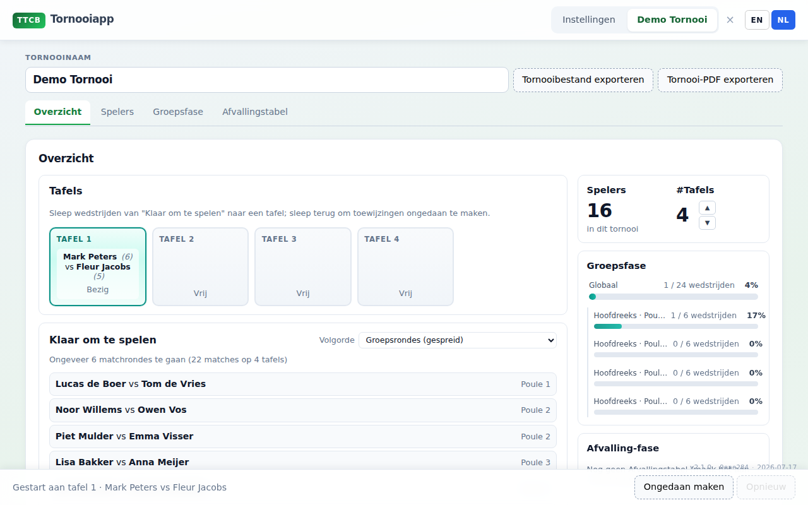
Klik op een spelersnaam om het detailvenster te openen. Corrigeer daar naam, handicap of groepstoewijzing als er iets mis is gegaan bij het aanmelden of indelen.
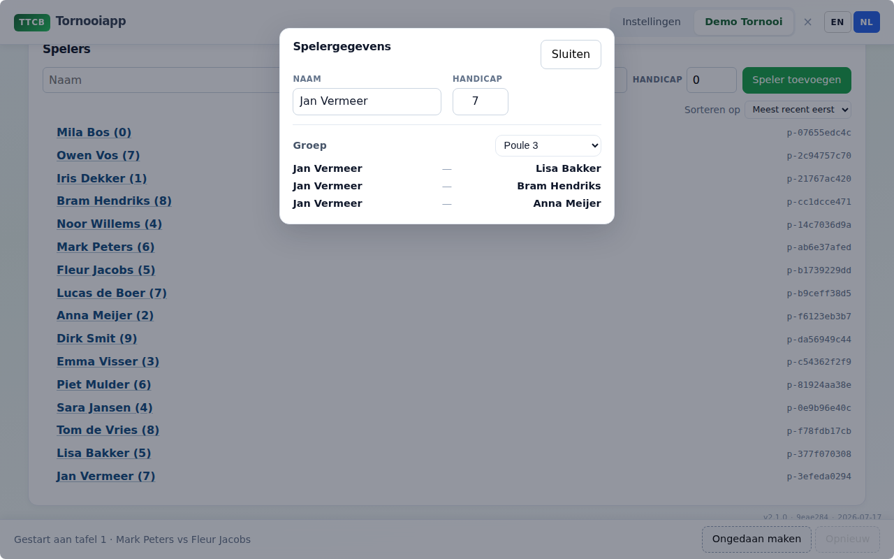
Als de groepsfase ver genoeg is (idealiter volledig gespeeld voor duidelijke standen), open je Afvalling / de bracket-tab. Kies Gekende formule en maak de bracket aan.
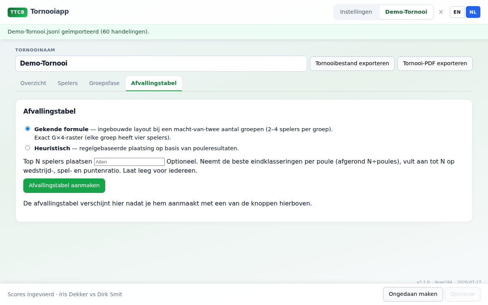
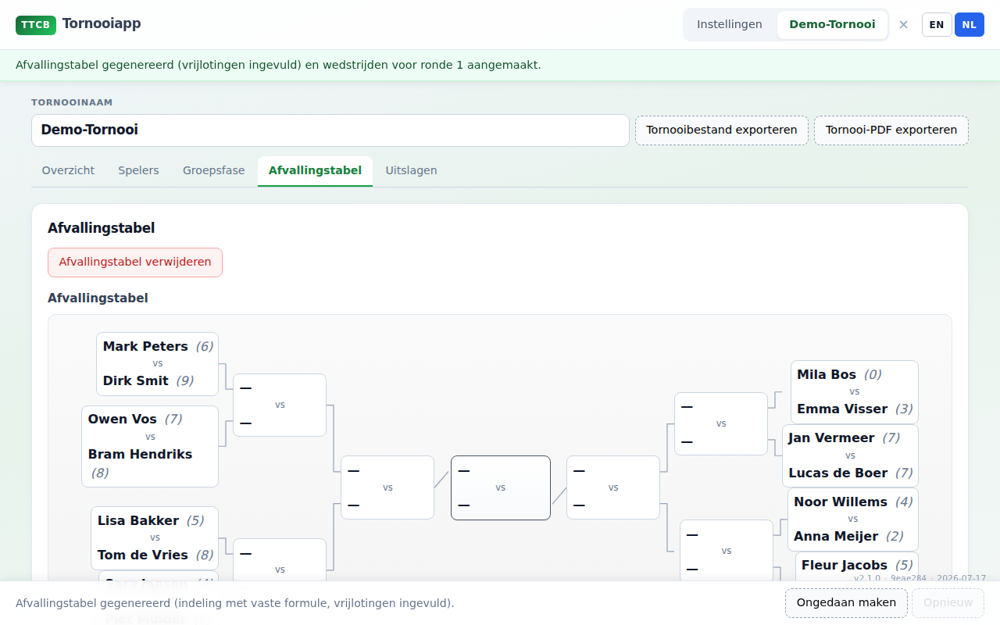